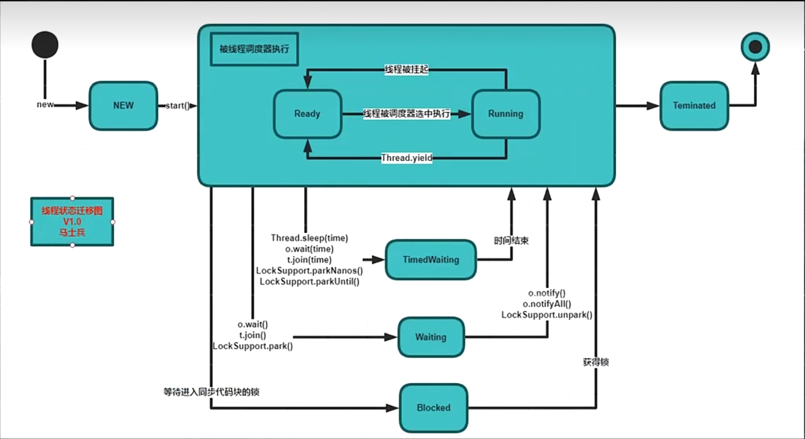
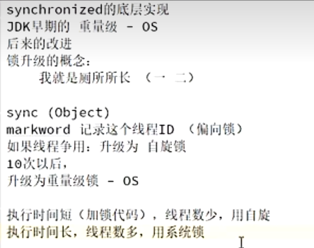
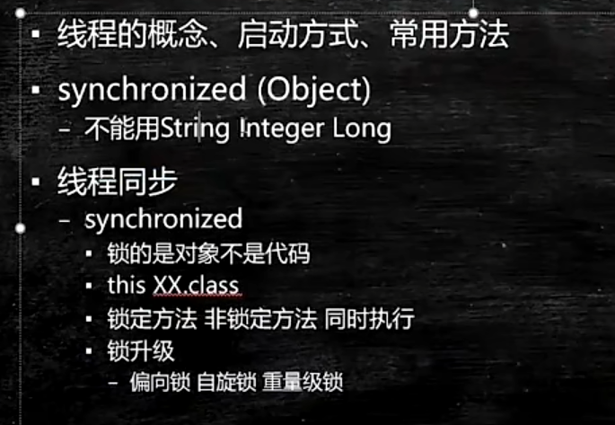
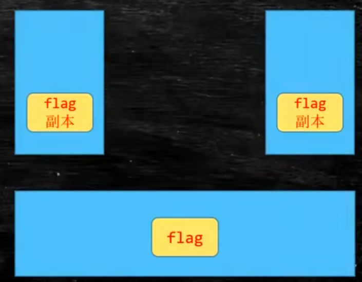
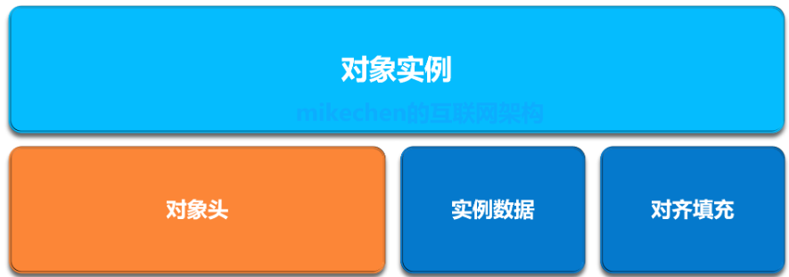
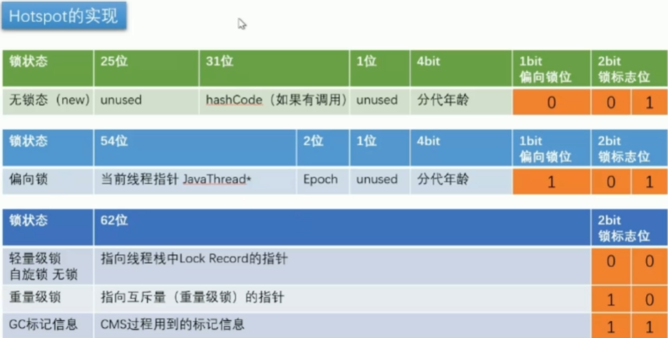

多线程与高并发
多线程
1.基础概念
1.1进程 线程 协程/纤程 (quasar)
- program app —》 QQ.exe
- QQ running —》进程
- QQ running —》进程
- 进程—》一个程序进入内存就是进程，动态的概念，进程每次都会生成一个主(main)线程,分配资源的单位
- 线程—》一个进程里面的不同的执行路径，最小的执行任务的单元
- 纤程 —》CPU-Ring0-Ring1-Ring2-Ring3
- Ring0-》内核态Ring3-》用户态
- 内核调用/系统调用-线程的操作
- 用户态启动线程
- 进入到内核态—保存用户态的线程
- 用户态 不经过内核态的线程 —纤程 golang的go程
1.2用户态
- int 0X80-128
- sysenter cpu 支持
- 保存用户态线程
- 寄存器压栈
- 进入syscall
- 内核态返回eax
- 恢复用户态现场
- 用户程序继续执行
1.3 Sleep_Yield_Jion
- Sleep
- 使当前线程暂停多少毫秒
- 调用后进入Waiting状态
- 方法声明在Thread中
- Yield
- 调用后进入Runnable状态
- 让出CPU时间片,之后有可能其他线程获得执行权，也有可能这个线程继续执行
- Jion
- 当A线程调用B线程的jion方法后，必须等到B线程执行完成后才能继续执行A线程
- 可以保证线程的顺序执行
- 只有当线程启动后调用jion方法才有意义
- 使用wait()方法实现
1.4 线程的状态

- New 新建状态
- 一个线程被创建,还没有开始运行的状态，即没有调用start()方法
- Runnable 就绪状态 —— (Ready 准备状态)和(Running 运行状态)
- 一个线程准备就绪,随时可以运行的时候就进入了Runnable状态
- Runnable状态可以是实际正在运行的线程(Running 运行状态),也可以是随时可以运行的线程(Ready 准备状态)
- 多线程环境下,每个线程都会被分配一个固定长度的CPU计算时间，每个线程运行一会儿就会停止让其他线程运行，这个停止就代表该线程在操作系统上被挂起，从Running状态进入到了Ready状态，进入了等待队列，只有这样才能让每个线程公平的运行。这些等待CPU和正在运行的线程就处于Runnable状态
- Blocked 阻塞状态
- 例如一个线程在等待I/O资源,或者他要访问的被保护代码已经被其他线程锁住了（Synchronized 同步代码块），那么他就处于Blocked状态，这个线程所需要的资源到位后进入Runnable状态
- Waitting
- TimedWaiting 有限期等待
- 无需被其他线程显示唤醒，在一定时间后由系统自动唤醒，以下方法会进入TimedWaiting 状态
- Thread.sleep(sleeptime)
- Object.wait(timeout)
- Thread.join(timeout)
- LockSupport.parkNanos(timeout)
- LockSupport.parkUntil(timeout)
- 无需被其他线程显示唤醒，在一定时间后由系统自动唤醒，以下方法会进入TimedWaiting 状态
- Waitting 无限期等待
- 如果一个线程在等待其他线程唤醒,那么他就处于Waiiting状态，以下方法会进入Waitting 状态
- Object.wait()
- Thread.join()
- LockSupport.park()
- 一下方法可以将线程唤醒
- Object.notify()
- Object.notifyAll()
- LockSupport.unpark()
- 如果一个线程在等待其他线程唤醒,那么他就处于Waiiting状态，以下方法会进入Waitting 状态
- Teminated 死亡状态
- 一个线程正常执行完毕或者意外失败，那么就会进入Teminated状态
- TimedWaiting 有限期等待
1.5 Synchronized
脏读(dirtyRead)


自旋锁：低级的排队,占用CPU时间
synchronized：能够保持线程的可见性,原子性不能保证有序性
synchronized本质是一把悲观锁
1.6 Volatile
- 保证线程的可见性
- MESI
- 缓存一致性协议
- 禁止指令重排序
- DCL单例 Double Check Lock

在类中线程有一个公共的堆内存,然后各自线程有着自己的工作内存,如果 当在flag中存在一个boolean变量,那么左右两边线程的工作内存会对其进行拷贝。如果左边的工作内存对其进行修改时为立即提交到工作内存,但是右边的更新工作内存中的变量时间就无法进行控制。
volatile：能够保持线程的可见性，有序性不能保证线程原子性
1.7 CAS(无锁优化 自旋)
- Compare And Swap
cas(V,Expected,NewValue)
- if v == E
- V =new
- otherwise try again or fail
- CPU原语支持
ABA问题
- 当原有值被其他线程改变时，再变回原有值
- 设置版本号 Version
- 如果基础类型，可以忽略不记
- 引用类型 你的女朋友分手了 然后又复合 中间经历了别的女人
1.8 Unsafe
- 直接操作内存
- allocateMemory putXX freeMemory pageSize
- 直接生成类实例
- allocateInstance
- 直接操作类或实例变量
- OjectFieldOffset
- getInt
- getObject
- CAS相关操作
- compareAndSwapObject Int Long
1.9 ReentrantLock
- ReentrantLock 可以完全替代synchronized
- trylock 尝试去获得锁
- lockinterupptibly
- 还可以在公平锁和非公平锁中切换
1.10 CyclicBarrier
- 其中有两个参数 第一个参数是条件 就是这个栅栏多少执行任务
- 第二个参数 就是任务 满足第一个条件后的任务
1.11 Phaser 阶段上锁
1.12 ReadWritLock 读写锁
- 共享锁 读锁
- 排它锁 写锁
1.13 Semaphore 信号灯
- 限流
- 默认是非公平
1.14 Exchanger
- 只能够两个线程之间
- Exchanger 中的exchange的方法是阻塞, 只有在Exchanger中交换之后线程才能够继续执行
2.1 互联网三高
高性能 高扩展 高可用
- 高性能
- 响应(低延时) 响应是处理这个请求的时间
- 吞吐(高吞吐量 高并发) 吞吐是在单位时间内能够发送的请求数
- 优化 amdahl （阿姆达尔）定律
- 要想显著加速整个系统,必须提升全系统中相同大的部分的速度
- 举例
- 集群 —吞吐
- 负载均衡 —吞吐
- 缓存 —响应
- JVM —响应
- 分库分表 —吞吐/响应
- Tomcat 非阻塞协议 —响应
- MQ异步 —响应
- 云原生 -k8s-动态压缩容-SpringCloud
Java对象组成
在HotSpot虚拟机中,真实的Java对象是分成三个部分：

对象头
用于存储对象自身运行时数据,包括哈希值(hashcode)、类型、GC分代年龄、锁状态标志、线程持有的锁、偏向线程ID、偏向时间戳等。
实例数据
用于存放类的数据信息,父类的信息，对象字段属性信息
对其填充
在JVM中，要求对象占用内存的大小应该是8bit的倍数,这个信息是用来补齐8bit的
JUC乐观锁
乐观锁 自旋锁 无锁(无悲观锁) CAS
CAS Compare And Swamp / Compare And Set / Compare And Exchange
问题：
ABA问题 基础类型可以忽略 引用类型不能
解决 atomicStampedReference版本号 AtomicMarkableReference 布尔类型
CAS原子性问题
- CAS操作本身必须具备原子性
- 底层是由一条指令来解决的 cmpxchg
- CAS操作cpu本身有指令支持 -cmpxchg不保障原子性
- lock -优先锁定 cache line 其次锁定北桥信号
是不是CAS一定就比悲观锁效率要高？
什么时候用CAS,什么时候用悲观锁？
- 能用synchronized解决问题的,优先使用synchronized
JDK1.5之后,Synchronized内部有锁升级的过程,偏向锁-轻量级锁(自旋锁)-重量级锁(悲观排队锁)
- 偏向锁
- 应用于第一个线程,偏向锁真实意义上不是一个锁是一个标签
- 把第一个线程的id记录在markword的对象头上

- 偏向锁